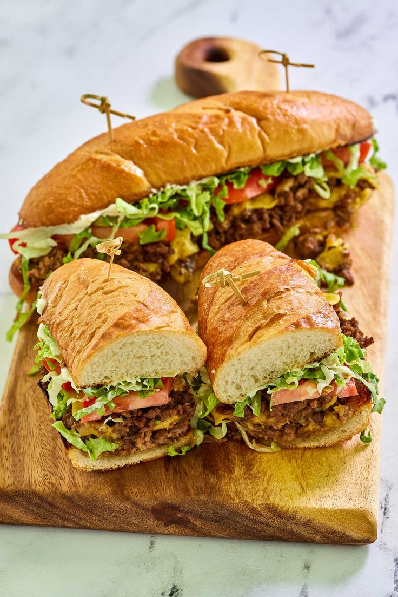
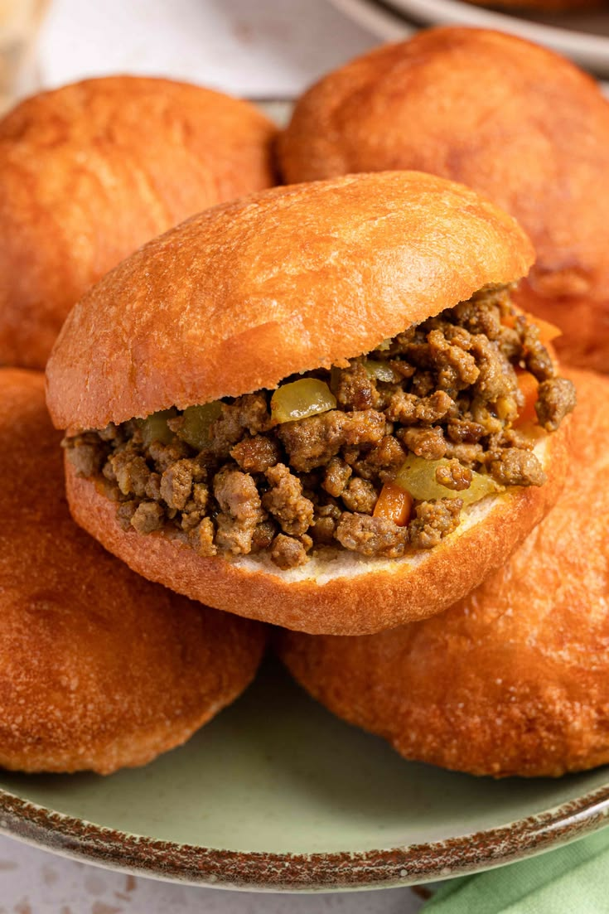
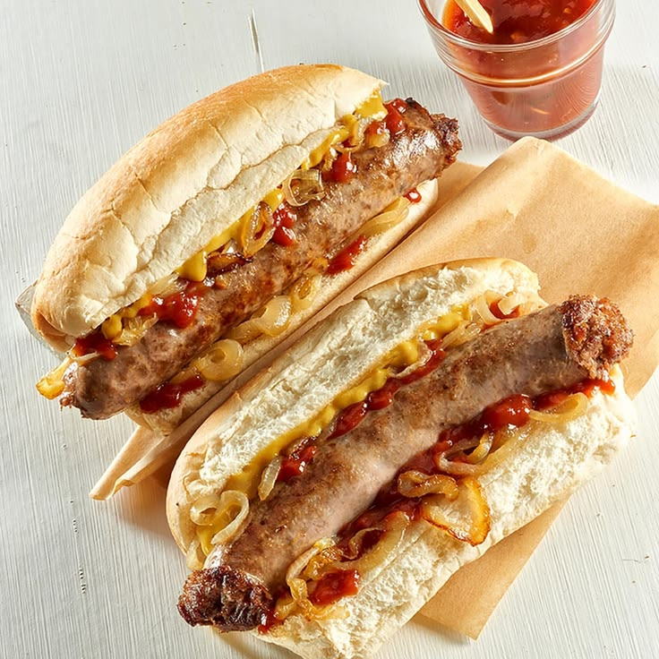

Quick Snack Streetwise
Experience the best of South African street food with our quick and delicious sandwiches, perfect for a fast meal on the go.
Kota
Enjoy the classic South African Kota, a hearty sandwich filled with slap chips, rusian, egg, polony and vienna, flavorful sauces.

Gatsby
Indulge in our Gatsby, a long sandwich packed with a variety of fillings, perfect for sharing or enjoying on your own.
Served with a varriety of protiens(beef masala, chicken masala or mutton masala)

Amagwinya
Try our Amagwinya, a popular South African snack made from deep-fried dough, perfect for a quick bite.
Served with a varriety of fillings(mince curry, chicken livers or polony&chesse with russian)

Boerwors Roll
Enjoy our Boerwors Roll, a traditional South African sausage served in a roll with any of choice(caramelized onions, tomato relish).

Our Menu
We offer a variety of dishes that are designed to be both quick and delicious. From classic South African comfort foods to innovative culinary creations, our menu has something for everyone of all cultures.